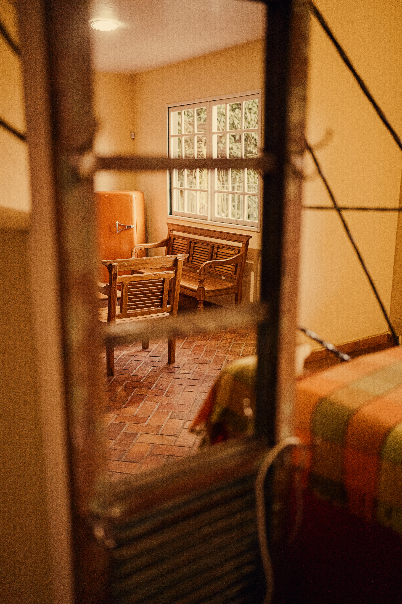
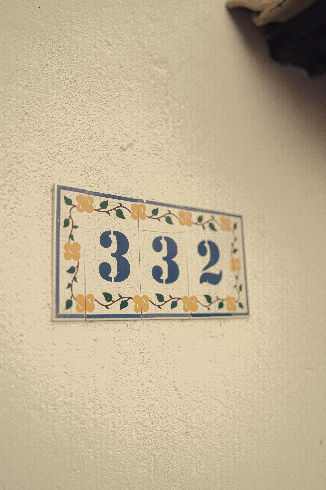
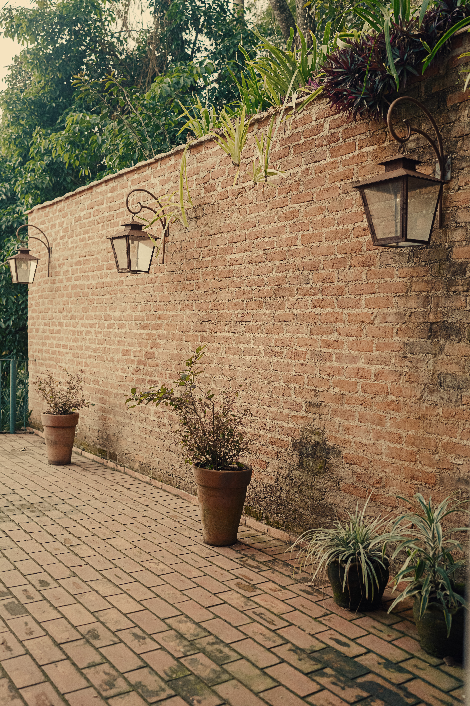
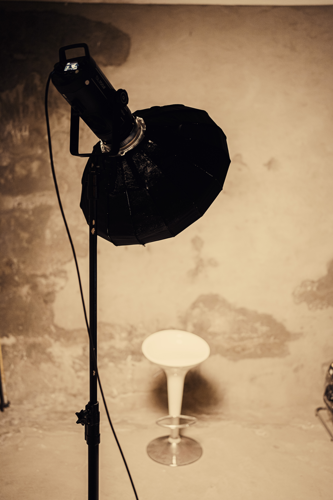
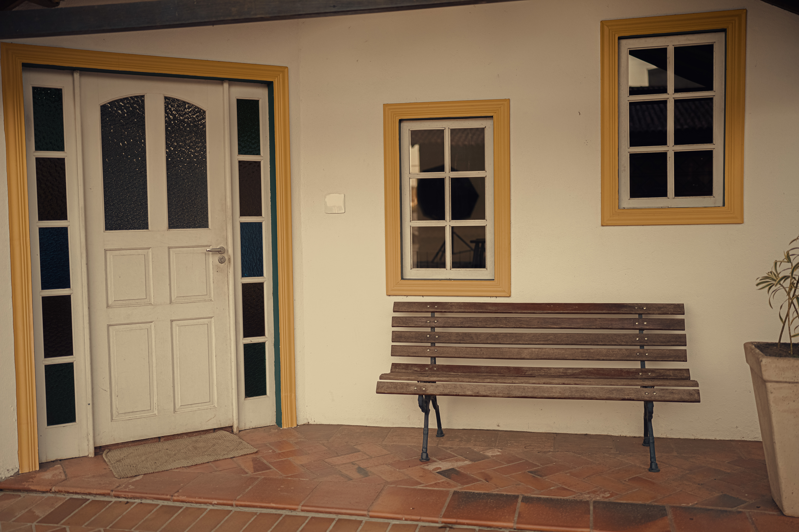
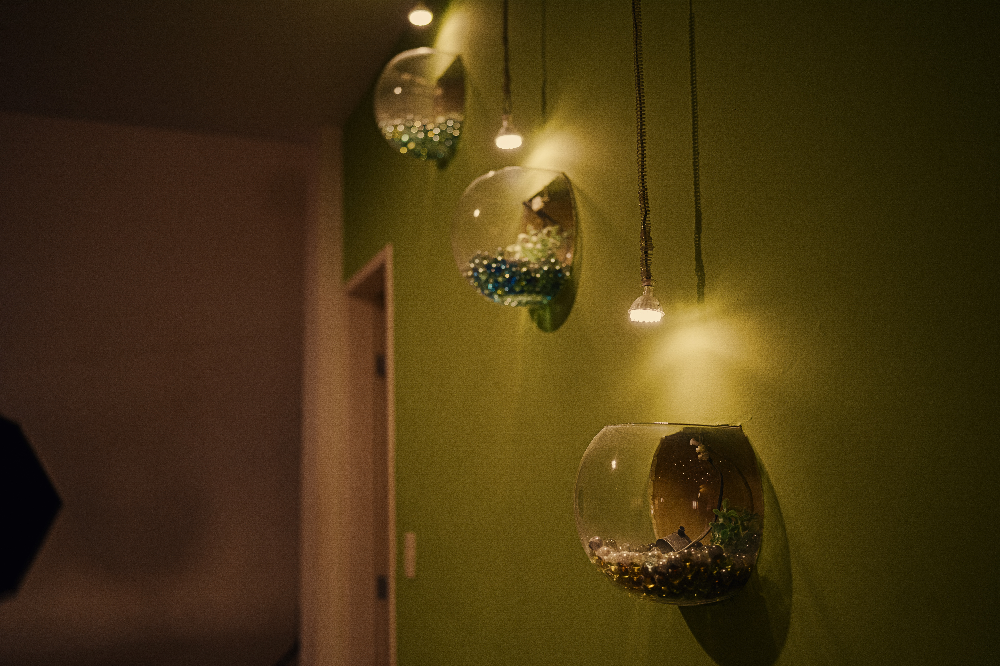
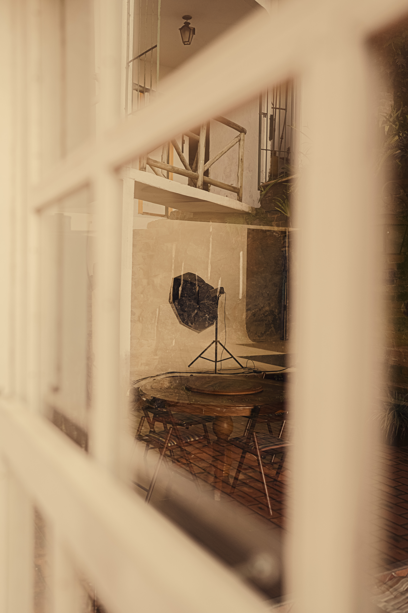
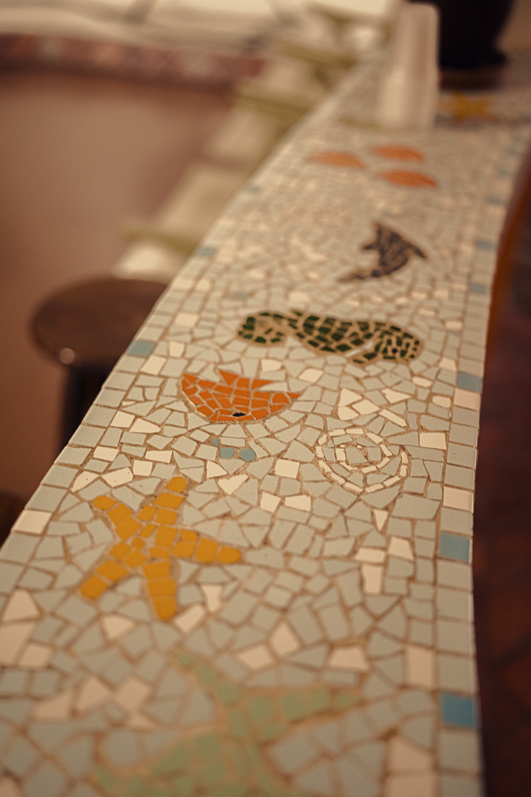
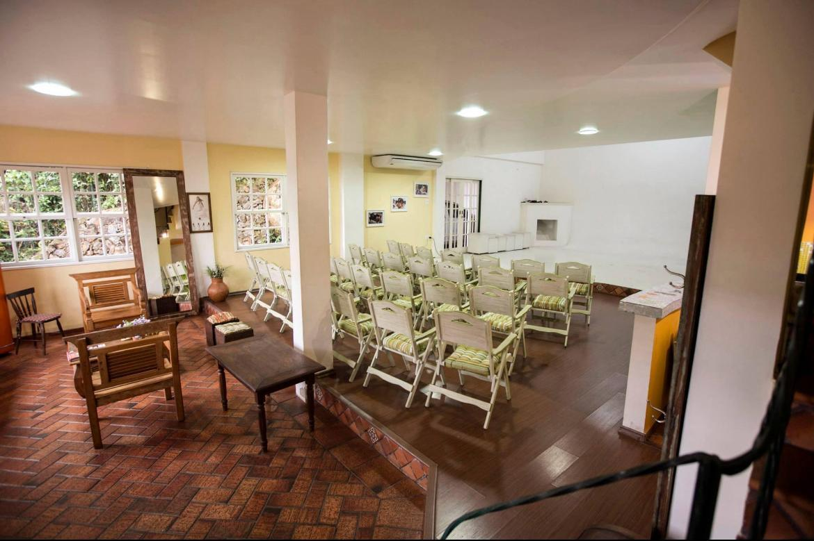

Rua sem saída · perto da natureza
Um lugar para
ideias ganharem
corpo.
Um estúdio com alma de casa antiga, luz bonita e espaço de sobra para você criar sem pressa.

Casa 332
desde 2024
desde 2024
ESTÚDIO
332
332
01role para explorar
01 / O ESTÚDIO
✳
Fotografia,
Fotografia,
filme e encontro.
O 332 é uma casa branca de estilo antigo transformada em um espaço aberto para a sua próxima história.
Bem localizado, perto do centro e ao mesmo tempo protegido do barulho, com uma área interna cheia de texturas e um quintal que respira natureza.
Ver tudo que o 332 oferece →
FOTOS✳VÍDEOS✳PALESTRAS✳EVENTOS✳BOOKS✳FOTOS✳VÍDEOS✳
02 / ESTRUTURA
Feito para
acontecer.
Do primeiro clique ao último convidado, cada canto pode virar cenário.

03
Cenários que
já existem
- Fundo infinito
- Parede preta
- Cimento queimado
04
Estrutura
de verdade
- Flashs e luz contínua
- Geladeira e fogão
- Arquibancada para formaturas
 LUZ · TEXTURA · PRESENÇA
LUZ · TEXTURA · PRESENÇA
03 / CABE NO SEU PLANO
Alugue por algumas horas.
Fique para a história.
O 332 recebe books, ensaios, palestras, vídeos, eventos intimistas e tudo o que pede um espaço com personalidade.
Verificando funcionamentoAtualizado agora
SEGUNDA08h às 20h
TERÇA08h às 20h
QUARTA08h às 20h
QUINTA08h às 20h
SEXTA08h às 20h
SÁBADO08h às 18h
DOMINGOFechado
04 / GALERIA
Um pouco do
clima daqui.
+ Ver galeria completa



Seu projeto
também
mora aqui.



05 / CHEGUE ATÉ AQUI
Centro por perto.
Silêncio também.
Rua Almirante Barroso, 332 · Paineiras
Juiz de Fora, MG · CEP
36016-130
06 / QUEM JÁ PASSOU
Palavras que
ficam.
Veja as avaliações do Estúdio 332 no Google. Em breve, com o novo nome também.
Ver no GoogleGGoogle
Carregando avaliações...
05 / VAMOS CONVERSAR
Seu próximo
capítulo começa
aqui.
Conte o que você está imaginando. A gente abre a porta.
Chamar no WhatsApp332